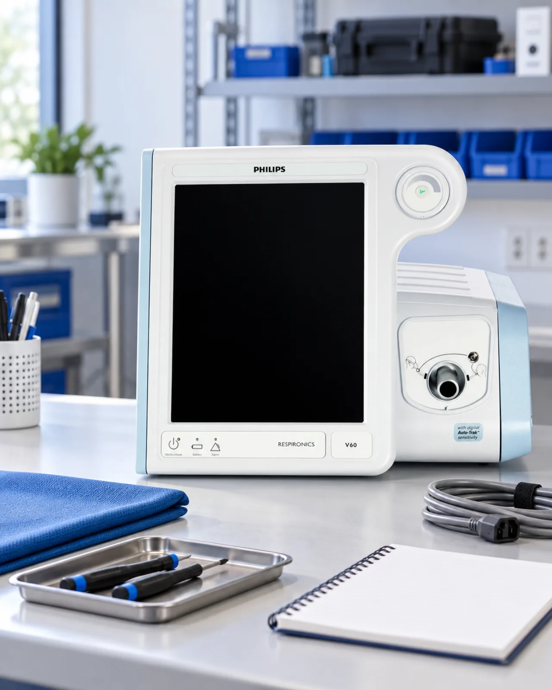
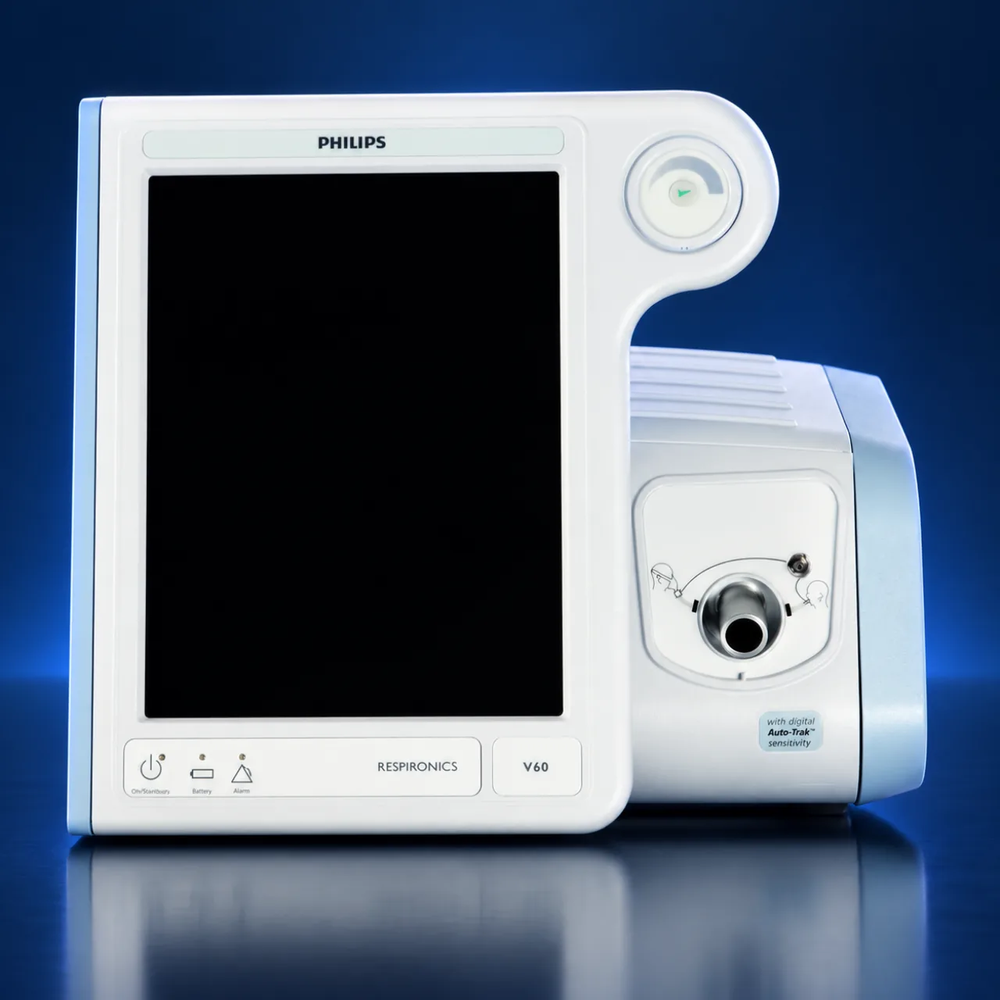
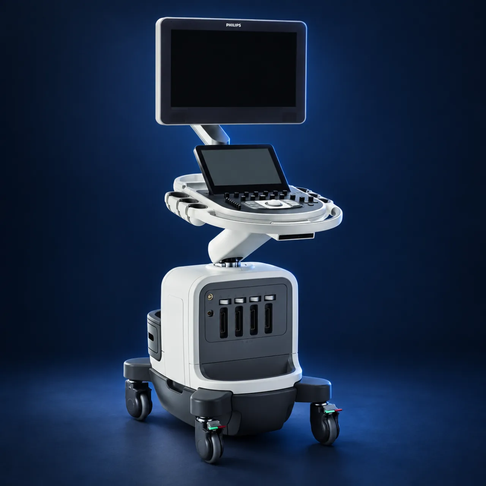
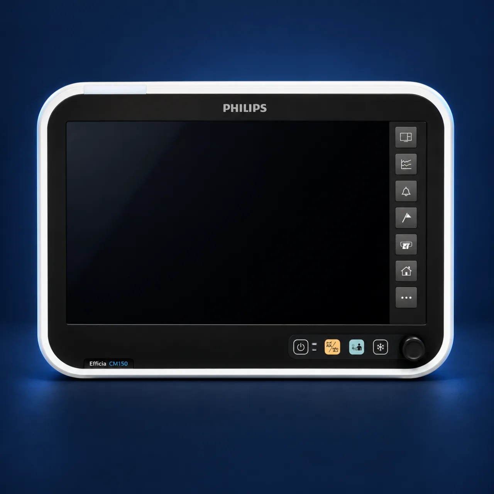
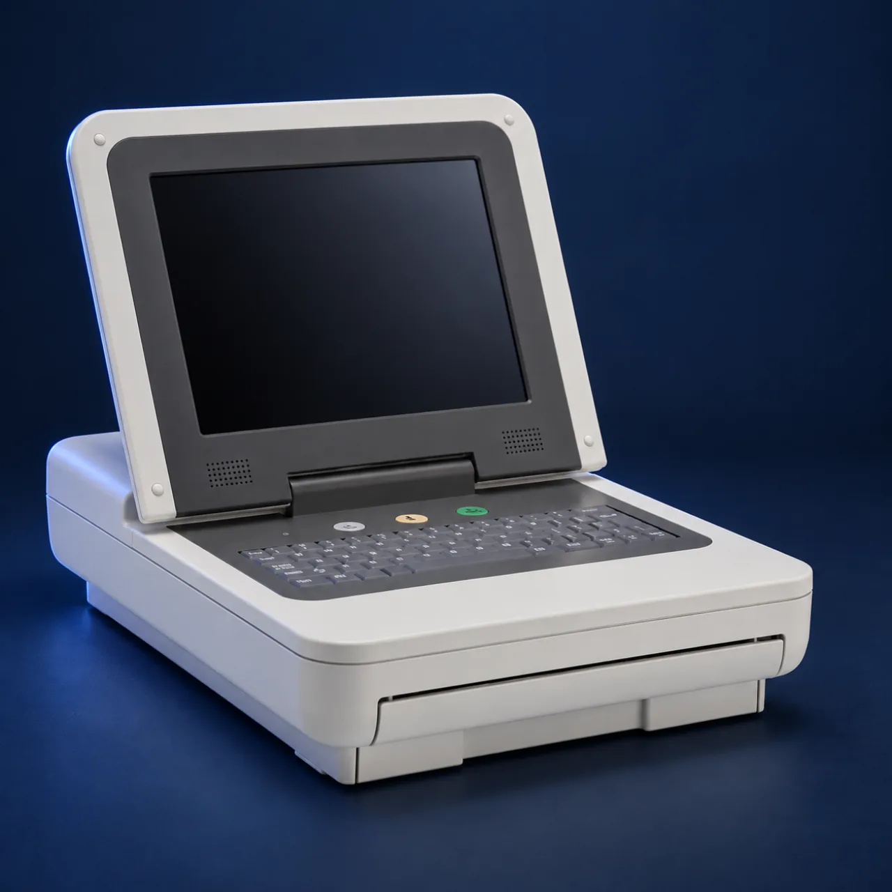
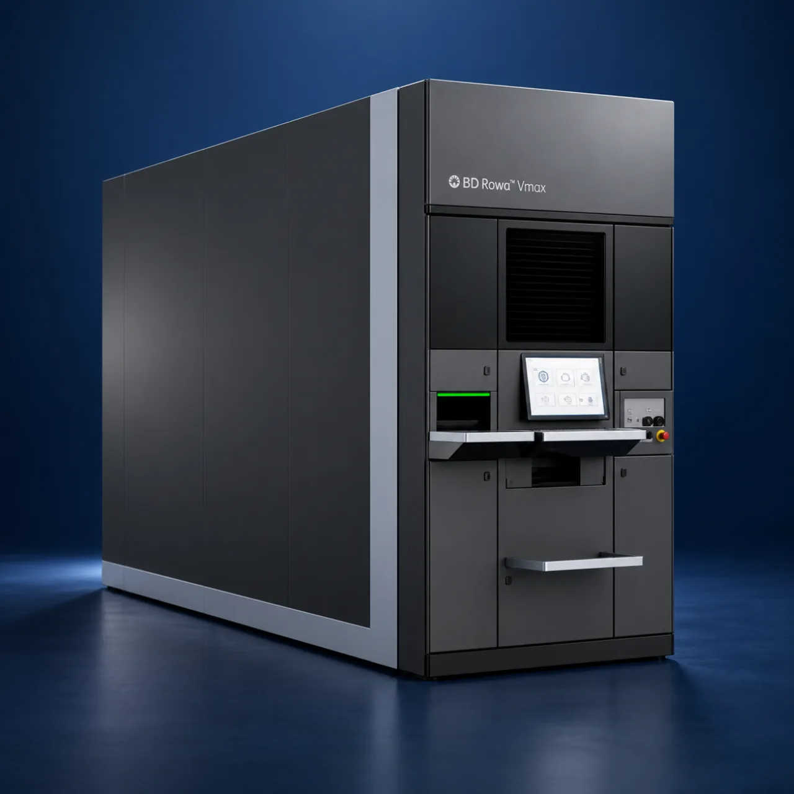
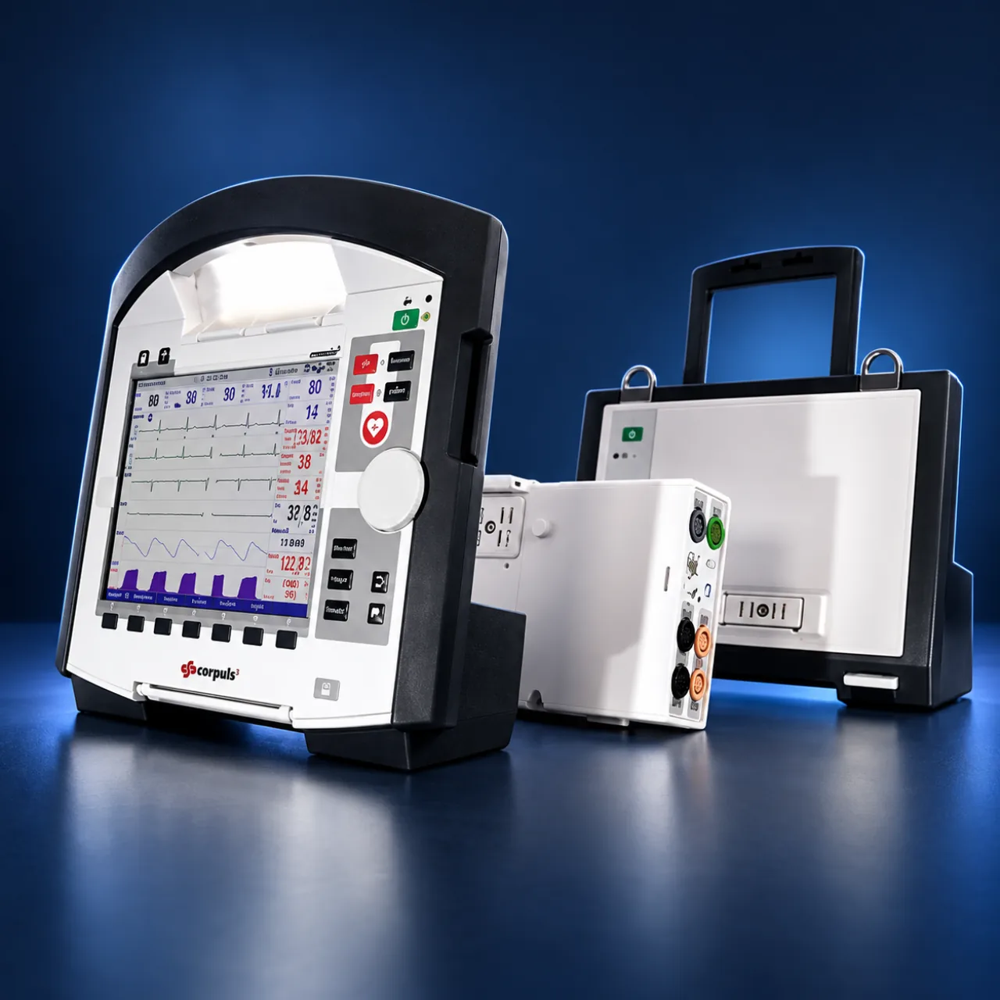
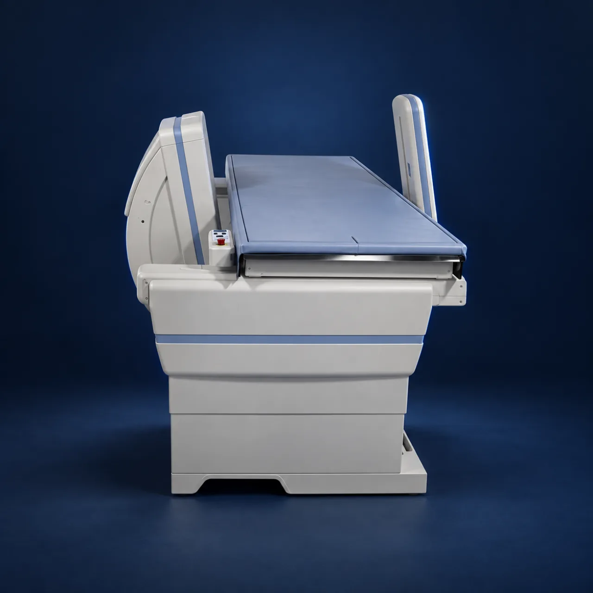
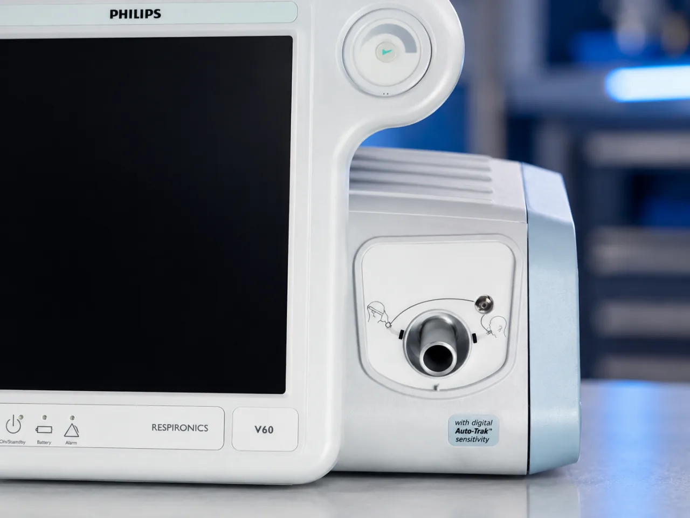
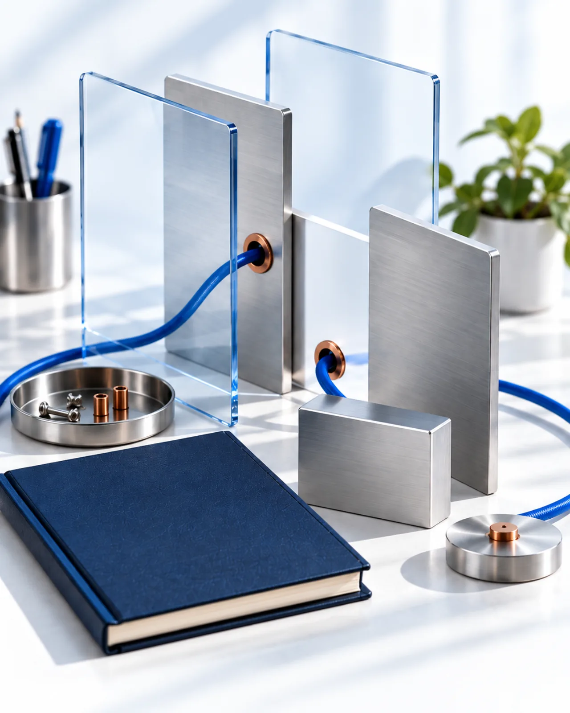

Jul 2023 – Present
Biomedical Engineer
Nova Biomedical Australia
Sydney-based. Field service, workshop repair and thoughtful problem-solving.
About

Field service across Australia, with workshop repair and technical support for hospital and pharmacy equipment.
Jul 2023 – Present
Nova Biomedical Australia
Dec 2019 – Feb 2020
Lundbeck Beijing
Adverse-reaction records, drug-safety documentation and cross-functional communication.

Field service, workshop repair, installation support and service documentation.

Ventilators

Cart-based & compact ultrasound

Bedside, telemetry & fetal monitoring

Diagnostic ECG / monitor-defibrillators

Medication management / pharmacy automation

Monitoring / defibrillation

DXA / specimen radiography

For an intermittent user-reported fault, I review device condition, service history, accessories, user workflow and reproducibility.
Manufacturer documentation and applicable service procedures guide fault isolation. I record findings and identify issues that need further support or escalation.
Post-service checks follow the applicable procedure. Recorded measurements and functional verification provide the evidence for the next decision.
Simpro work orders and service reports capture completed work, verification results, equipment status and outstanding issues for a traceable handover.
A documented decision: ready for use, follow-up required or escalation required.

AI tools & workflow
I use Codex, Claude Code and ChatGPT for research, drafting and coding assistance, with outputs reviewed before use.
Codex Claude Code ChatGPT
Set the task and context.
Explore, draft and iterate.
Check facts and suitability.
Test the final result.
Research & education
Biomedical engineering research focused on experimental planning, impedance measurement, validation methods and technical documentation.

2024
The University of Sydney
Awarded Jun 2024
Experimental planning, impedance measurement and validation.
2017–2020
The University of Sydney
Medical science, biomedical design, data analysis and electronics.

Contact
For biomedical engineering or medical device field service opportunities in Sydney.